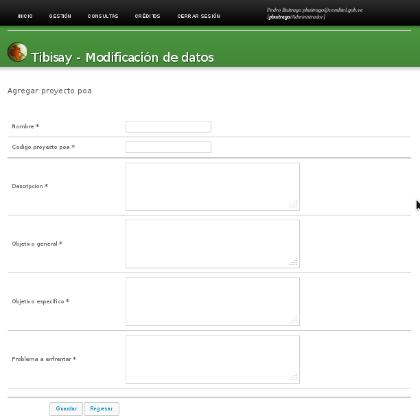
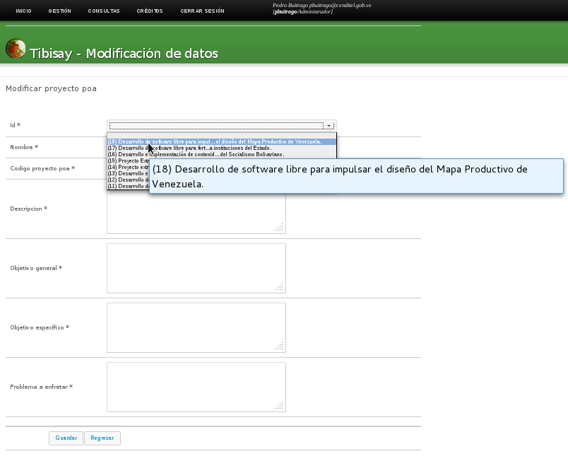
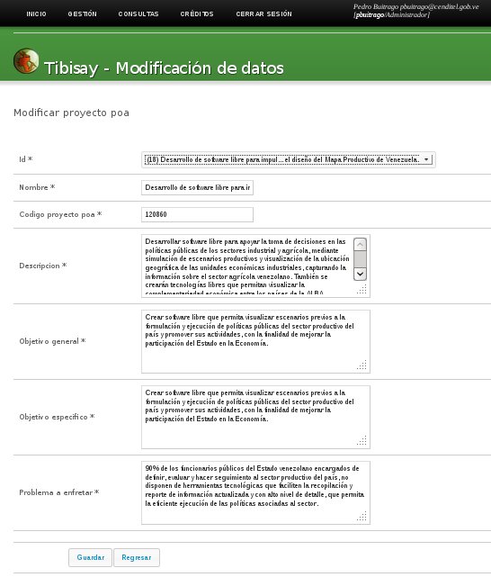

En la sección 2.1 utilizamos la etiqueta <operation> que nos genera en link para acceder a la acción.
1.- Elemento operation:
<!ELEMENT operation (command*) > ----> <!-- operation va a tener como elemento: command --> <!ATTLIST operation name CDATA ----> #IMPLIED desc CDATA -----> #IMPLIED subtitle (yes|no) "no" icon CDATA ---> #IMPLIED >Operation va a contener solo el elemento (command*), el símbolo (*) significa que el elemento puede no aparecer o aparecer una o más veces. Tendrá como atributo:
- name: Nombre de la acción
- desc: Descripción de la acción
- subtitle: (yes|no).
- icon: se especifica la imagen asociado a la acción
2.- Elemento command:
<!ELEMENT command (fields) > -----> <!-- command va a tener como elemento: fields --> <!ATTLIST command id CDATA ----->#IMPLIED type (actualizar|eliminar|agregar) -----> "agregar" table CDATA -----> #IMPLIED >Command va a contener solo el elemento fields y tendrá como atributo:
- id :
- type: que refiera al tipo de acción que realizara en la base de datos, puede tener como valor actualizar, eliminar y agregar. Por defecto tomara la acción “agregar”
- table: la tabla de la base de datos a la que va ejecutar el tipo de acción
3.- Elemento fields:
<!ELEMENT fields (field+) > ----> <!-- fields va a tener como elemento: field -->Fields va a contener solo el elemento field, el símbolo (+) significa que el elemento tiene que aparecer una o más veces (no puede no aparecer), no posee atributo.
4.- Elemento field:
<!ELEMENT field (#PCDATA) > <!-- no tiene elemento --> <!ATTLIST field type CDATA #IMPLIED mandatory CDATA #IMPLIED title CDATA #IMPLIED primarykey (yes|no) "no" validation CDATA #IMPLIED options CDATA #IMPLIED function CDATA #IMPLIED format (time_t|integer) "time_t" desc CDATA #IMPLIED literal CDATA #IMPLIED sequence CDATA #IMPLIED typesequence (next|current) "next" input CDATA #IMPLIED path CDATA #IMPLIED visible CDATA #IMPLIED order (asc|desc|none) "asc" icon CDATA #IMPLIED index CDATA #IMPLIED filter CDATA #IMPLIED changefor CDATA #IMPLIED changekey CDATA #IMPLIED enablethis CDATA #IMPLIED repetible (yes|no) "no" >Field no contiene elemento y tendrá como atributo:
mandatory: Este atributo indica si el campo es o no obligatorio, puedo o no aparecer
title: Este atributo indica el nombre del campo (y es lo que aparece en la interfaz), puedo o no aparecer
primarykey: Este atributo indica si el campo es clave primaria de la tabla, puedo o no aparecer
validation: Este atributo se utiliza para validar el contenido del campo, por lo general se coloca expresiones regulares, puedo o no aparecer
options: Este atributo se utilizar para varias opciones dependiendo del tipo de campo que se va a utilizar, ejemplo:
- type=“datetime” options=”calendarPopup::true,displayFormat::dd/MM/yy” indica el formato de la fecha.
- type=“combolisttable” options=”id:proyecto_poa::’(‘ || id || ‘) ‘ || nombre” consulta sql para mostrar las opciones del campo (para este ejemplo el sql seria select ‘(‘ || id || ‘) ‘ || nombre from proyecto_poa; ) .
- type=“stringbox” options=”wiki” indica que el campo es de tipo wiki
- type=“combolistliteral” options=”Opcion1::Opcion1::Opcion1,Opcion2::Opcion2::Opcion2,Opcion3::Opcion3::Opcion3” Muestra las opciones del campo de selección: Opcion1, Opcion2 y Opcion3
- type=“comboflow” options=”all”: Muestra todos los archivos de flujos
function: este atributo permite realizar una operación ya sea definida en el sistema o consulta a la base de datos, ejemplo:
- <field type=”datetime” function=”now()”, toma la fecha del servidor
- function=“date_part(‘year’, to_timestamp({#fecha_ingreso}))+1” corresponde a una consulta sql: select date_part(‘year’, to_timestamp({#fecha_ingreso}))+1, este select toma #fecha_ingreso el año y le suma 1
format: este atributo indica el tipo de formato que va tomar el campo, ejemplo
- <type=”datetime” format=”time_t” este campo toma el formato de tiempo
- <type=”datetime” format=”integer” este campo toma el formato de número entero
desc: este atributo permite colocar una descripción del campo ejemplo: - desc=“La explicación más detallada”>
literal: este atributo indica el valor del campo, ejemplo:
- literal=“nueva” el campo toma el valor nueva
- literal=“_USERNAME” el campo toma el valor del usuario autenticado
sequence: este atributo se indica la variable de la secuencia para generar numero en la base de datos, el número que genere corresponde al valor que va tomar el campo, ejemplo:
- sequence=“actividad_por_accion_id_seq” generar el nuevo número en la tabla de la base de datos en la tabla actividad_por_accion tipesequence.
input: este atributo permite indicar si el campo se mostrara en la interfaz gráfica del sistema
path: este atribute se indica la dirección de una archivo, ejemplo:
- path=“/home/vbravo/.safet/flowfiles/SolicitudVistaVacacionessp.xml”
Visible
order: este atributo permite ordenar el listado de datos en orden descendiente o ascendente , ejemplo:
- order=“desc” ordena la lista de datos en descendiente
icon: este atributo permite indicar la imagen asociada al campo, ejemplo:
- icon=“resumen.png”
index
filter: este atributo permite filtrar la información de los directorios, ejemplo: - filter=”Archivos de flujo (*.xml);;Todos (*)” Filtra o permite mostrar todos los archivos contenidos en un directorio indicado
changefor: este atributo permite traer el valor del campo de la base de datos una vez que cambia el campo indicado en el atributo, ejemplo: - changefor=”id” el campo tomo el valor que tiene almacena en la base de datos cuando selecciona el valor del campo id
changekey
enablethis
repetible
Esta acción va contener los siguientes campos:
- Campo para agregar un nuevo registro a la base de datos, este campo utiliza una sequence
- Nombre
- Código proyecto poa
- Descripción
- Objetivo general
- Objetivo especifico
- Problema a enfrentar
# Archivo deftrac.xml <operation name="POA" desc="Acciones del Plan Operativo Anual" icon="project.png"> </operation> <operation name="agregar_proyecto_poa" desc="Agregar un nuevo proyecto POA" icon="plus.png"> <command id ="1" type="agregar" table="proyecto_poa" > <fields> <field type="string" mandatory="yes" primarykey="yes" sequence="proyecto_poa_id_seq" title="proyecto_a_agregar"> id </field> <field type="string" icon="resumen.png" mandatory="yes" validation="" title="Nombre" desc="Nombre del Proyecto POA"> nombre </field> <field type="string" icon="resumen.png" mandatory="yes" validation="" title="Codigo_proyecto_poa" desc="codigo del proyecto POA a agregar"> codigo_proyecto </field> <field type="stringbox" icon="desc.png" mandatory="yes" options="wiki" title="Descripcion" desc="La explicación más detallada"> descripcion </field> <field type="stringbox" mandatory="yes" title="Objetivo_General" desc="Objetivo general del proyecto"> objetivo_general </field> <field type="stringbox" mandatory="yes" title="Objetivo_Especifico" desc="Objetivo especifico del proyecto"> objetivo_especifico </field> <field type="stringbox" mandatory="yes" title="problema_a_enfrentar" desc="Problema a enfrentar"> problema_a_enfrentar </field> </fields> </command> </operation>Esta acción que corresponde a unas de las operaciones de Proyectos POA, se mostraría la interfaz gráfica del sistema de la siguiente manera:

Figura 9: Interfaz gráfica para la acción, Agregar proyecto POA.
Esta acción va contener los siguientes campos:
- Identificador del proyecto en la base de datos:
- Nombre
- Código proyecto poa
- Descripción
- Objetivo general
- Objetivo especifico
- Problema a enfrentar
# Archivo deftrac.xml <operation name="modificar_proyecto_poa" desc="Modificar un proyecto poa existente" icon=""> <command id ="1" type="actualizar" table="proyecto_poa"> <fields> <field type="combolisttable" options="id:proyecto_poa::'(' || id || ') ' || nombre" mandatory="yes" primarykey="yes" title="id" order="desc" changekey="yes"> id </field> <field type="string" icon="resumen.png" mandatory="yes" validation=".*" title="Nombre" desc="Nombre del Proyecto POA" changefor="id"> nombre </field> <field type="string" icon="resumen.png" mandatory="yes" validation="" title="Codigo_proyecto_poa" desc="Nombre de la acción específica" changefor="id"> codigo_proyecto </field> <field type="stringbox" icon="desc.png" mandatory="yes" options="wiki" title="Descripcion" desc="La explicación más detallada" changefor="id" > descripcion </field> <field type="stringbox" mandatory="yes" title="Objetivo_General" desc="Objetivo general del proyecto" changefor="id" > objetivo_general </field> <field type="stringbox" mandatory="yes" title="Objetivo_Especifico" desc="Objetivo especifico del proyecto" changefor="id" > objetivo_especifico </field> <field type="stringbox" mandatory="yes" title="problema_a_enfretar" desc="Problema a enfrentar" changefor="id"> problema_a_enfrentar </field> </fields> </command> </operation>Esta acción que corresponde a unas de las operaciones de Proyectos POA, se mostraría la interfaz gráfica del sistema de la siguiente manera:

Figura 10: Interfaz gráfica, acción modificar proyecto POA, selección del identificador del proyecto En la figura 10 se muestra en el momento que se va a seleccionar el proyecto poa a modificar, este wiget de selección correspondería a esta parte del código.
<field type="combolisttable" options="id:proyecto_poa::'(' || id || ') ' || nombre" mandatory="yes" primarykey="yes" title="id" order="desc" changekey="yes"> id </field>En el código de la operación modificar un proyecto poa, podemos observar que el resto de los campo tomara el valor que esta almacenado en la base de datos una ves que selecciona el identificador del proyecto (changefor=”id”>). Una ves seleccionada el identificador del proyecto poa la interfaz gráfica del sistema se mostraría de la siguiente manera:

Figura 11: Interfaz gráfica, acción Modificar proyecto POA, una ves seleccionado el proyecto POA.
{kind=link}
{kind=link}
{kind=link}